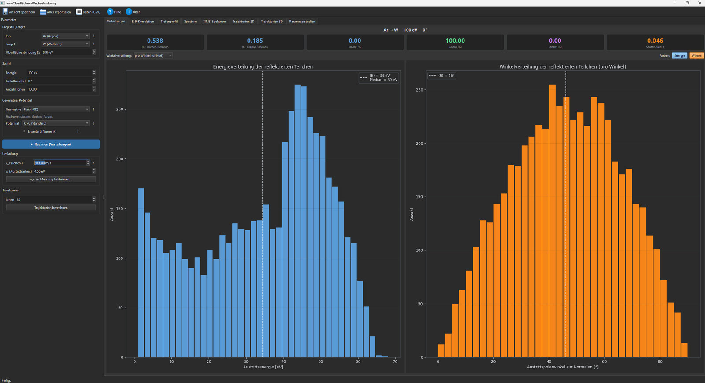
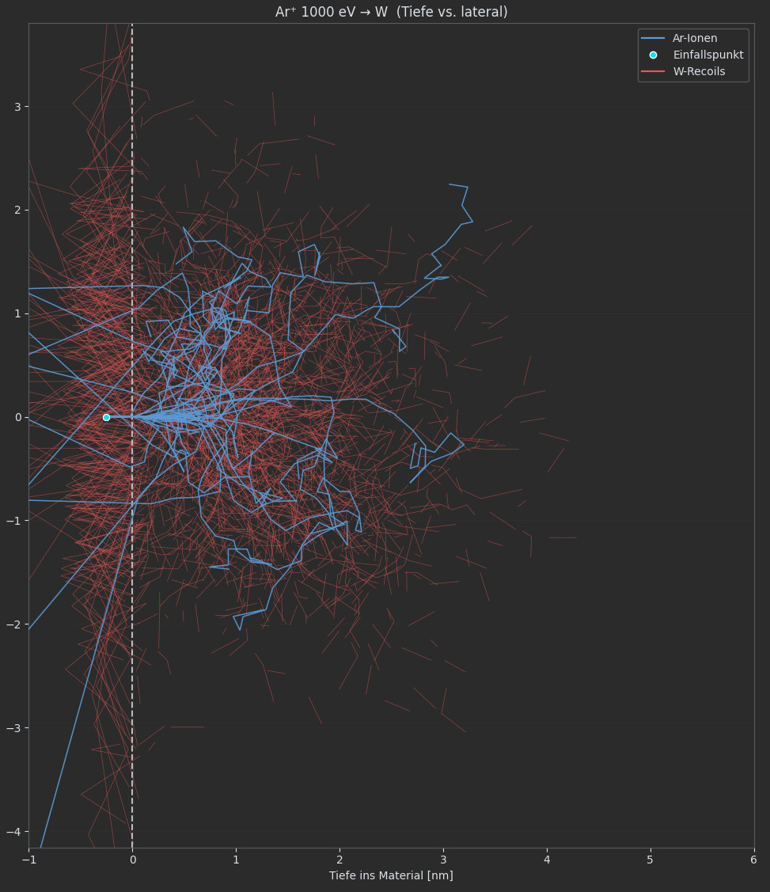
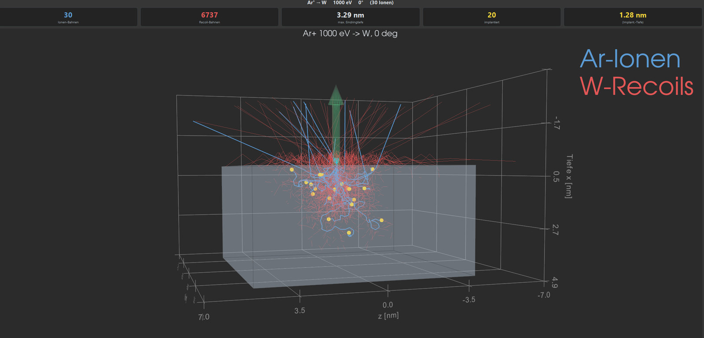

Wozu diese Software?
In elektrischen Raumfahrtantrieben und in der Oberflächenanalytik treffen Ionen niedriger und mittlerer Energie auf Werkstoffe. Aus dieser Wechselwirkung folgen die praktisch wichtigen Größen: Wie viele Ionen werden zurückgestreut und mit welcher Energie- und Winkelverteilung? Wie stark wird das Material abgetragen? Und in welchem Ladungszustand verlassen die Teilchen die Oberfläche – eine Frage, die für jede ionenoptische oder massenspektrometrische Diagnostik entscheidend ist, weil dort nur geladene Teilchen erfasst werden.
Das Programm verbindet beide Aspekte in einer Oberfläche. Die Stoßkinematik liefert für jedes zurückkehrende oder gesputterte Teilchen Energie und Austrittswinkel; daraus ergibt sich die Senkrechtgeschwindigkeit, die den Ladungsaustausch mit der Oberfläche steuert. Reflexion, Zerstäubung und Ladungszustand werden damit aus einem gemeinsamen Simulationslauf konsistent bestimmt und lassen sich unmittelbar gegeneinander bewerten.

Physikalische Modelle und Funktionen
Der Funktionsumfang ist modular aufgebaut. Je nach Fragestellung lassen sich Projektil, Target, Oberflächenform, Wechselwirkungspotential und Ladungsmodell frei kombinieren.
- Projektile – Edelgase (He, Ne, Ar, Kr, Xe) und die reaktiven Elemente H, N, O, dazu molekulare Ionen (O₂⁺, N₂⁺, NO⁺, H₂⁺) über die Dissoziationsnäherung. Beliebige weitere Elemente lassen sich mit Ordnungszahl und Masse frei definieren.
- Targetmaterialien – 18 Elementvorgaben mit Literaturwerten für Oberflächenbindungsenergie und Teilchendichte, Verbindungen und Legierungen (TiO₂, Al₂O₃, SiO₂, TiN, Messing, Edelstahl) sowie ein Baukasten für eigene Verbindungen mit bis zu vier Komponenten und freier Stöchiometrie.
- Oberflächengeometrie – halbunendliche glatte Fläche, Kugel für Nanopartikel, Schicht auf Substrat, raue Oberfläche mit einstellbarer Amplitude und Wellenlänge in zwei oder drei Dimensionen sowie Import eigener Dreiecksnetze im OBJ-Format.
- Wechselwirkungspotentiale – abgeschirmte Coulomb-Potentiale (KR_C, ZBL, Molière, TRIDYN, Lenz-Jensen) für den Standardfall sowie anziehende Potentiale (Morse, Lennard-Jones, WW, KRC-Morse, 4-8) mit frei einstellbaren Parametern für chemisch gebundene und sehr leichte Spezies.
- Numerische Verfahren – wählbare Streuintegrale (Mendenhall-Weller, MAGIC, Gauß-Verfahren), Nullstellensucher (Newton, CPR, Polynomial), Modelle für das elektronische Bremsen und für die mittlere freie Weglänge. Beim Potentialwechsel setzt das Programm automatisch eine gültige Kombination.
- Oberflächenbindungsmodell – planare oder isotrope Austrittsbarriere und wählbare Zuordnung der Bindungsenergie zu Projektil, Target oder beidem im Mittel. Damit lässt sich untersuchen, wie das Oberflächenpotential die Austrittsenergie reflektierter Teilchen und in der Folge deren Ladungszustand beeinflusst.
- Umladung als Drei-Kanal-Modell – Auger-Neutralisation nach Hagstrum für den positiven Kanal, resonanter Ladungstransfer nach Los und Geerlings für den negativen Kanal, der neutrale Anteil als Rest. Austrittsarbeit des Targets und Elektronenaffinität des Projektils gehen explizit ein; die charakteristischen Geschwindigkeiten lassen sich an Messwerte kalibrieren.
- Zerstäubung – Ausbeute, Energie- und Winkelverteilung der gesputterten Atome, bei Verbindungen elementaufgelöst mit Teilausbeuten, sodass präferenzielles Sputtern sichtbar wird.
- Sekundärionen und SIMS-Spektrum – Ionisierungswahrscheinlichkeit der gesputterten Atome aus Ionisierungspotential, Elektronenaffinität und Austrittsarbeit; daraus ein Massenspektrum über dem Masse-zu-Ladung-Verhältnis mit natürlicher Isotopenverteilung, wahlweise positiv oder negativ.
- Teilchenbahnen – Darstellung der Ionen- und Recoil-Bahnen im Target als zweidimensionaler Schnitt und als drehbare dreidimensionale Ansicht, eingefärbt nach Energie beziehungsweise nach Element.
- Parameterstudien – automatisierte Serien über Energie, Einfallswinkel oder Materialauswahl. Pro Rasterpunkt werden alle Kennzahlen berechnet, die Darstellung füllt sich fortlaufend und lässt sich jederzeit anhalten.
- Auswertung und Export – Grafikexport mit wählbarem Hintergrund, Beschriftungssprache, Auflösung und Farbpalette sowie Export aller Rohdaten als CSV mit selbstbeschreibendem Metadatenkopf im Sinne der FAIR-Prinzipien.
Reflexion, Zerstäubung und Ladungszustand
Aus einem einzelnen Simulationslauf gehen mehrere Auswertungen hervor, die das Programm in eigenen Reitern bereitstellt.
- Energie-Winkel-Korrelation – ein zweidimensionales Histogramm der reflektierten Teilchen zeigt den Zusammenhang zwischen Austrittsenergie und Austrittswinkel, der in getrennten eindimensionalen Verteilungen verlorengeht. Die Darstellung ist wahlweise als drehbare dreidimensionale Landschaft verfügbar.
- Energiespektrum der gesputterten Atome – das Spektrum zeigt das charakteristische Thompson-Maximum bei etwa der halben Oberflächenbindungsenergie. Aus der überlagerten Modellkurve wird die effektive Oberflächenbindungsenergie zurückgewonnen.
- Sekundärionen-Massenspektrum – aus den gesputterten Atomen und ihren Ionisierungswahrscheinlichkeiten ergibt sich ein Massenspektrum mit natürlichem Isotopenmuster. Eine niedrige Austrittsarbeit erhöht die Ausbeute negativer Sekundärionen deutlich.
Teilchenbahnen und Parameterstudien
Neben den integralen Kennzahlen lassen sich einzelne Stoßkaskaden verfolgen und ganze Parameterbereiche automatisiert durchrechnen.


Verifikation und Vergleich
Die Rechenmodelle werden gegen etablierte Referenzwerte, analytische Modellkurven und physikalische Konsistenzbedingungen geprüft.
- Referenzfall Argon auf Wolfram – bei 1000 eV und senkrechtem Einfall ergeben sich eine Teilchenreflexion von 0,34, eine Energiereflexion von 0,10 und eine Sputterausbeute von 1,05. Die Werte stimmen mit den etablierten RustBCA-Benchmarks überein, die ihrerseits gegen SDTrimSP und Experiment geprüft sind.
- Massenverhältnis und Rückstreuung – der ausgeprägte Unterschied zwischen schweren und leichten Targets wird korrekt wiedergegeben. Argon auf Wolfram reflektiert stark, Argon auf Titan dringt bei nahezu gleicher Masse überwiegend ein und zerstäubt stärker.
- Analytische Modellkurven – Thompson-Verteilung für das Sputterspektrum sowie Ausbeute- und Reflexionsformeln vom Bohdansky-Yamamura- beziehungsweise Eckstein-Typ werden an die simulierten Punkte angepasst. Die abgeleiteten Parameter und das Bestimmtheitsmaß werden ausgewiesen.
- Konsistenz bei Verbindungen – die Reflexion einer Legierung reproduziert die ihrer Hauptkomponente; Messing verhält sich wie Kupfer, Edelstahl wie Eisen.
- Ladungsmodell – die berechnete Überlebensfraktion von Argon auf Metallen liegt über den gesamten Energiebereich unterhalb eines Prozents und entspricht damit der Erfahrung aus der niederenergetischen Ionenstreuspektroskopie. Für Sauerstoff liefert der negative Kanal erwartungsgemäß hohe Ausbeuten, für Stickstoff nahezu keine.
Gültigkeitsbereich
Die folgenden Einschränkungen ergeben sich aus den zugrunde liegenden Modellen und sollten bei der Interpretation berücksichtigt werden.
- Untere Energiegrenze – die Binary Collision Approximation setzt voraus, dass ein Teilchen im Wesentlichen mit einem Targetatom zugleich stößt. Unterhalb von etwa 10 bis 20 eV gewinnen Vielteilchen- und Bindungseffekte an Bedeutung; Ergebnisse in diesem Bereich sind als Tendenz zu lesen.
- Kalibrierung des Ladungsmodells – die charakteristischen Geschwindigkeiten des Umladungsmodells sind systemabhängig. Ohne Kalibrierung an Messdaten liefert das Modell belastbare Trends, für quantitative Absolutwerte ist eine Anpassung erforderlich. Das Programm enthält dafür eine Kalibrierfunktion.
- Reaktive Spezies – für Sauerstoff, Stickstoff und molekulare Ionen ist die Stoßkinematik ebenso belastbar wie für Edelgase, der Ladungsaustausch dagegen nur qualitativ, da er über abweichende Mechanismen verläuft.
- Statisches Target – das Material wird als homogen und amorph behandelt. Fluenzabhängige Effekte wie Aufrauung, Implantation oder Änderung der Zusammensetzung im Betrieb werden nicht fortgeschrieben.
- Gekrümmte und raue Geometrien – diese Modi nutzen einen anderen Geometriekern und eignen sich für den Vergleich rauer gegen glatte Oberflächen innerhalb desselben Modus, nicht als Ersatz für die validierte Rechnung an der ebenen Fläche.
- Atomare Sekundärteilchen – zerstäubt werden ausschließlich einzelne Atome. Molekül- und Clusterionen, wie sie in realen Sekundärionen-Massenspektren auftreten, werden nicht modelliert.
Download
Die Software wird als Installationsprogramm für Windows bereitgestellt und bringt alle benötigten Komponenten einschließlich des Simulationskerns mit. Eine gesonderte Installation von Python oder weiteren Bibliotheken ist nicht erforderlich. Die Installation erfolgt standardmäßig für das aktuelle Benutzerkonto, benötigt keine Administratorrechte und verändert keine systemweiten Einstellungen.
- Version
- 1.0.0
- Bereitgestellt
- 21.08.2026, 11:41 Uhr (MESZ)
- Betriebssystem
- Windows 10/11, 64 Bit
- Datei
- IonSurfaceInteraction-Setup-1.0.0.exe
- Größe
- 181 MB
- SHA-256
- e2dc8654233d300dfe9f1d147c7815fe6c80f205e506effeb5637c3b91a667e4
- Simulationskern
- RustBCA (im Paket enthalten)
- Entwicklung
- Dr. Kristof Holste, Justus-Liebig-Universität Gießen
Neuerungen in Version 1.0.0
Erste öffentlich bereitgestellte Fassung. Sie umfasst den vollständigen Funktionsumfang der bisherigen Entwicklung:
- Reflexion und Zerstäubung mit Energie-, Winkel- und Tiefenverteilungen sowie Energie-Winkel-Korrelation.
- Umladung als Drei-Kanal-Modell mit positiver, neutraler und negativer Fraktion, einschließlich Kalibrierfunktion.
- Sekundärionen und daraus abgeleitetes SIMS-Massenspektrum mit natürlicher Isotopenverteilung.
- Verbindungen und Legierungen mit elementaufgelöster Auswertung präferenziellen Sputterns.
- Fünf Oberflächengeometrien von der ebenen Fläche bis zum importierten Dreiecksnetz.
- Wählbare Wechselwirkungspotentiale, numerische Verfahren und Oberflächenbindungsmodelle.
- Automatisierte Parameterstudien über Energie, Einfallswinkel und Materialauswahl mit fortlaufender Darstellung.
- Grafikexport mit wählbarem Hintergrund, Sprache, Auflösung und Farbpalette sowie Datenexport als CSV mit vollständigem Metadatenkopf.
- Integrierte Anleitung mit physikalischer Einordnung aller Eingabegrößen.
Nutzung und Lizenz. Das Paket enthält den Simulationskern RustBCA, der unter der GNU General Public License Version 3 steht; die Lizenzbedingungen liegen dem Installationspaket bei und sind für die Weitergabe maßgeblich. Die Nutzung für wissenschaftliche Zwecke ist unentgeltlich. Bei Verwendung in Veröffentlichungen wird um Zitation dieser Software sowie der RustBCA-Originalarbeit gebeten.
Fragen und Rückmeldungen. Hinweise auf Fehler, Wünsche zu weiteren Materialien oder Modellen sowie Fragen zur Kalibrierung des Ladungsmodells richten Sie bitte an Kristof.Holste@physik.jlug.de. Für die Einordnung Ihrer Rückmeldung ist eine kurze Angabe zu Institution und Anwendungsfall hilfreich.
Hinweis zur Windows-Installation. Das Installationsprogramm ist derzeit nicht digital signiert. Windows kann deshalb beim Start eine Warnung über eine unbekannte oder nicht erkannte Anwendung anzeigen. Über „Weitere Informationen“ und anschließend „Trotzdem ausführen“ kann die Installation fortgesetzt werden. Die angegebene SHA-256-Prüfsumme ermöglicht es, die heruntergeladene Datei vorab zu verifizieren.
Hinweis zum Speicherort der Ergebnisse.
Simulationsergebnisse werden nicht im Installationsverzeichnis, sondern
im Benutzerprofil unter
%LOCALAPPDATA%\IonSurfaceInteraction\results\ abgelegt. Die
Deinstallation über „Apps & Features“ entfernt das
Programm; bereits erzeugte Ergebnisse bleiben erhalten und können bei
Bedarf manuell gelöscht werden.